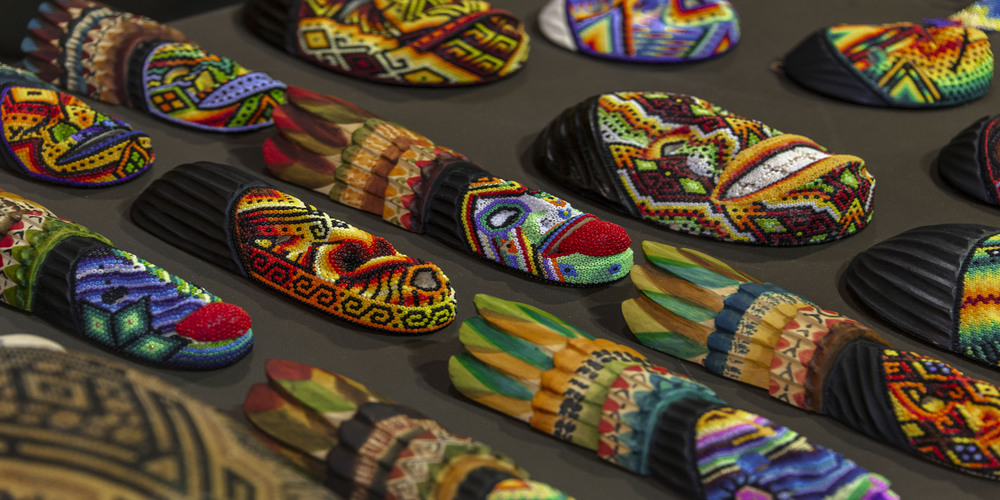

Sibundoy handicrafts
More detail
These are handcrafted items, often wooden carvings, intricately decorated with colorful beads by indigenous artisans from the Sibundoy Valley in Colombia. The patterns often represent elements of nature and their cosmology.

Wayuu mochila
More detail
These are traditional, hand-woven bags created by the Wayuu people of La Guajira, Colombia. They are known for their vibrant colors, intricate patterns, and unique weaving techniques, with each bag telling a story through its design.

Alebrije
More detail
They are figures of fantastical animals, carved from wood or made from cardboard, and painted with very bright colors, originating from Mexico.